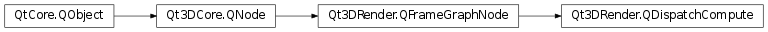

Qt3DRender.QDispatchCompute¶
Synopsis¶
Functions¶
- def
workGroupX() - def
workGroupY() - def
workGroupZ()
Slots¶
- def
setWorkGroupX(workGroupX) - def
setWorkGroupY(workGroupY) - def
setWorkGroupZ(workGroupZ)
Signals¶
- def
workGroupXChanged() - def
workGroupYChanged() - def
workGroupZChanged()
Detailed Description¶
FrameGraph node to issue work for the compute shader on GPU
A
Qt3DRender.QDispatchComputeallows work to be issued for the compute shader to run on the GPU. ThePySide2.Qt3DRender.Qt3DRender::QDispatchCompute.workGroupX(),PySide2.Qt3DRender.Qt3DRender::QDispatchCompute.workGroupY()andPySide2.Qt3DRender.Qt3DRender::QDispatchCompute.workGroupZ()properties specify the work group sizes for the compute shader invocation.QComputeCommandcomponents need to be added to entities to instruct Qt3D to select the materials and geometry from the entities for the compute invocation. The work group sizes for the shader invocation will be the maximum of the work group sizes specified inQDispatchComputeandQComputeCommand.
-
class
PySide2.Qt3DRender.Qt3DRender.QDispatchCompute([parent=nullptr])¶ Parameters: parent – PySide2.Qt3DCore.Qt3DCore::QNodeThe constructor creates an instance with the specified
parent.
-
PySide2.Qt3DRender.Qt3DRender.QDispatchCompute.setWorkGroupX(workGroupX)¶ Parameters: workGroupX – PySide2.QtCore.intSee also
PySide2.Qt3DRender.Qt3DRender::QDispatchCompute.workGroupX()
-
PySide2.Qt3DRender.Qt3DRender.QDispatchCompute.setWorkGroupY(workGroupY)¶ Parameters: workGroupY – PySide2.QtCore.intSee also
PySide2.Qt3DRender.Qt3DRender::QDispatchCompute.workGroupY()
-
PySide2.Qt3DRender.Qt3DRender.QDispatchCompute.setWorkGroupZ(workGroupZ)¶ Parameters: workGroupZ – PySide2.QtCore.intSee also
PySide2.Qt3DRender.Qt3DRender::QDispatchCompute.workGroupZ()
-
PySide2.Qt3DRender.Qt3DRender.QDispatchCompute.workGroupX()¶ Return type: PySide2.QtCore.intSee also
PySide2.Qt3DRender.Qt3DRender::QDispatchCompute.setWorkGroupX()
-
PySide2.Qt3DRender.Qt3DRender.QDispatchCompute.workGroupXChanged()¶
-
PySide2.Qt3DRender.Qt3DRender.QDispatchCompute.workGroupY()¶ Return type: PySide2.QtCore.intSee also
PySide2.Qt3DRender.Qt3DRender::QDispatchCompute.setWorkGroupY()
-
PySide2.Qt3DRender.Qt3DRender.QDispatchCompute.workGroupYChanged()¶
-
PySide2.Qt3DRender.Qt3DRender.QDispatchCompute.workGroupZ()¶ Return type: PySide2.QtCore.intSee also
PySide2.Qt3DRender.Qt3DRender::QDispatchCompute.setWorkGroupZ()
-
PySide2.Qt3DRender.Qt3DRender.QDispatchCompute.workGroupZChanged()¶
© 2018 The Qt Company Ltd. Documentation contributions included herein are the copyrights of their respective owners. The documentation provided herein is licensed under the terms of the GNU Free Documentation License version 1.3 as published by the Free Software Foundation. Qt and respective logos are trademarks of The Qt Company Ltd. in Finland and/or other countries worldwide. All other trademarks are property of their respective owners.